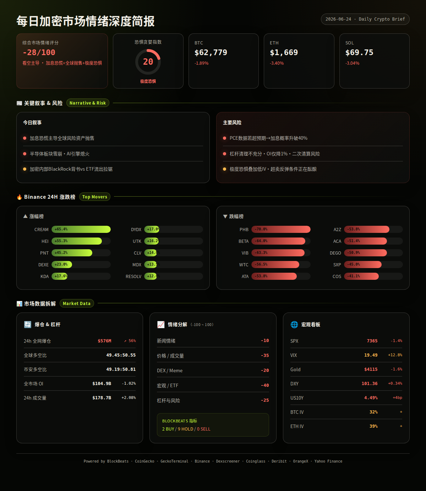
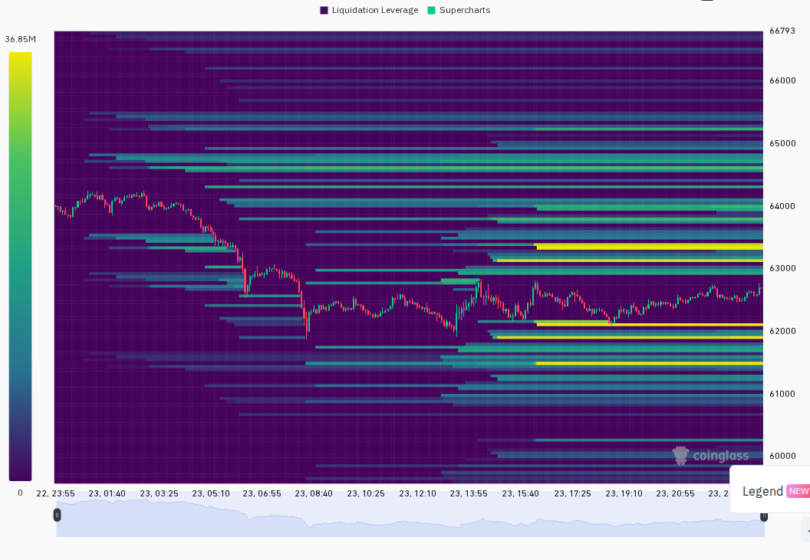
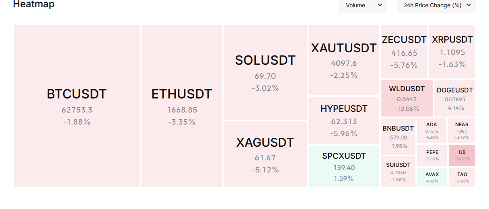

━━━━━━━━━━━━━━━━━━━━━━
⏰ 1. 24小时变化：
恐惧与贪婪指数 20 · 极度恐惧
BTC $62,779 · -1.89%
ETH $1,669 · -3.40%
SOL $69.75 · -3.04%
VIX 19.49 · +12.8% · 正常偏高
成交量 $178.7B · +2.08%
DXY 101.36 · +0.34%
爆仓 $576M · +56.16%
━━━━━━━━━━━━━━━━━━━━━━
整体来看，今天不是加密的特异性事件，而是全球宏观同步抛售——加息预期 + 美元走强 + 半导体暴跌三重叙事主导了所有风险资产。加密内部有个别结构性利好（BlackRock 背书、Chainlink 银行合作、英国稳定币框架），但短期被宏观恐慌完全淹没。
—— BTC / ETH / SOL ——
三个主要币种全线下跌，宏观风险压倒了链上结构性支撑信号。BTC 相对抗跌（-1.9%），ETH 和 SOL 跌幅更深（-3.4%、-3.0%），说明资金在恐慌中倾向回流 BTC。
信息 1：BlackRock 官方表态"比特币可作为多元化工具，战略配置有助于增强回报潜力"，同时旗下 ETF 向 Coinbase 存入近 1.5 亿美元 BTC 和 6338 万美元 ETH。（BlockBeats）
信息 2：Strategy（原 MicroStrategy）将 USD 储备增至 14 亿美元，比特币总持仓扩至 847,363 BTC，继续执行"增持 + 储备"双轨策略。（LSEG/Reuters headlines, analysis）
信息 3：昨日美国现货 BTC ETF 净流出 6830 万美元，ETH ETF 净流出 6610 万美元——规模不大，但已连续多日流出，反映机构情绪谨慎。（BlockBeats）
信息 4：Vitalik 宣布以太坊基金会完成重组，裁员 20%，全年预算削减约 40%，转向长期 Grant 模式。短期可能影响生态信披和开发节奏。（BlockBeats）
信息 5：ETH 跌破 $1700（最低 $1636），24h 跌幅 3.4% 大于 BTC，链上一巨鲸 7 年前建仓的 ETH 开始出货，获利 4100 万美元。（BlockBeats, Binance）
信息 6：SOL 在 $68-72 区间震荡，资金费率转负（-0.0088%），期货出现折价，一巨鲸持有 3814 万美元 SOL 空头仓位。（Binance, BlockBeats）
—— 宏观 / 地缘政治 ——
全球风险资产今日经历 2026 年以来最大的单日同步抛售，"加息恐慌"取代"战争风险"成为市场新的定价核心。
信息 7：CME FedWatch 显示 7 月加息 25bp 概率升至 34.2%，维持不变概率仅 65.8%。US10Y 收益率升至 4.49%（+4bp），DXY 走强至 101.36（+0.34%）。（BlockBeats, Yahoo Finance）
信息 8：韩国 KOSPI 指数盘中暴跌 8% 触发熔断，SK 海力士跌逾 10%、三星电子跌逾 5%。日本 Nikkei 跌超 2%，港股恒生科技指数跌超 3%。（BlockBeats）
信息 9：美国股市期货延续跌势：S&P 500 期货 -1.5%，Nasdaq-100 期货 -2.5%。半导体板块成重灾区——Intel -9%、Micron -9%、MRVL -7%。（BlockBeats）
信息 10：SpaceX 股价暴跌 16%，自 IPO 以来首次跌破发行价，蒸发逾 900 亿美元市值。SPCX 合约 24h 爆仓达 4051 万美元，仅次于 BTC 和 ETH。（BlockBeats）
信息 11：现货黄金跌近 2% 至 $4108/盎司，白银暴跌 4-5%。德意志银行警告"若美联储转向鹰派，黄金可能受压至 $3800"。黄金与加密同步下跌说明当前是纯风险厌恶，黄金并未发挥避险作用。（BlockBeats）
信息 12：美国解除对伊朗石油制裁（数十年来首次），为期两个月；Trump 同意保持霍尔木兹海峡开放、不再实施海上封锁——地缘风险溢价部分消退，油价 WTI 跌 2%。（BlockBeats）
—— AI / 半导体叙事 ——
今日市场的核心杀伤力来自半导体板块的集体雪崩。AI 叙事过去 18 个月一直是风险偏好的支柱，这条主线的动摇对加密的情绪外溢不可忽视。
信息 13：全球存储芯片龙头遭遇重创：SK 海力士跌逾 10%（盘中触发熔断），三星电子跌逾 5%，Micron 盘前跌逾 9%，SanDisk 跌逾 10%。分析师指"海力士市值超越三星"被视为本轮存储周期见顶信号。（BlockBeats）
信息 14：NVIDIA 市值跌破 5000 亿美元，当日跌 2.6%。SemiAnalysis 报告称长江存储正在迅速缩小与前三 NAND 巨头差距，华为-中芯国际生态可能改变竞争格局。（BlockBeats）
信息 15：花旗报告称 Google TPU 需求可能在 2028 年前超越 NVIDIA。Google 和 Amazon 联合发起对 NVIDIA 的"全面进攻"——AI 硬件竞争格局正在重构。（LSEG/Reuters headlines, BlockBeats）
信息 16：AI 融资热度不减：Upscale AI 完成 1.9 亿美元融资（NVIDIA 参投，估值 20 亿美元）；Groq 融资 6.5 亿美元，从芯片转向 AI 数据中心竞争；Blackstone 计划向日本 AI 数据中心投资 300 亿美元。（BlockBeats）
—— 值得关注的标的 ——
Binance 涨幅榜 (USDT):
· CREAM +65.4%
· HEI +55.3%
· PNT +45.2%
· DEXE +23.0%
· KDA +17.6%
· DYDX +17.0%
· UTK +16.2%
· CLV +14.0%
· MDX +13.5%
· RESOLV +12.0%
跌幅榜:
· PHB -70.0%
· BETA -64.0%
· VIB -63.3%
· WTC -56.5%
· ATA -53.8%
· A2Z -53.8%
· ACA -51.4%
· DEGO -50.9%
· SXP -45.0%
· COS -41.1%
—— 融资 / VC ——
信息 17：区块链数据分析公司 Allium 完成 4000 万美元 B 轮融资，Amplify Partners 领投，Kleiner Perkins 和 Theory Ventures 参投。其数据已被 Visa、美联储、Coinbase 和 a16z 采用。（BlockBeats）
信息 18：链上交易平台 TurboFlow 完成 600 万美元种子轮，Pantera Capital 领投，Susquehanna Crypto 和 DCG 参投。定位为"亚太版 Kalshi"，beta 版已有 15000+ 测试用户、190 亿美元交易量。（BlockBeats）
信息 19：AI 基础设施公司 Upscale AI 完成 1.9 亿美元融资，NVIDIA 和 Salesforce Ventures 参投，估值 20 亿美元，显示 AI+infra 赛道仍是资本避风港。（BlockBeats）
—— X/Twitter KOL 信号 ——
信息 20：过去 24h 共抓取 550 条推文（3/3 List），主线讨论集中在未分类泛内容（259 条/47%）、Crypto 市场（92 条/17%）、AI/Agent（91 条/17%）、地缘政治（50 条/9%）。噪音较高（48% 为生活/未分类），交易信号需要更多交叉验证。（X Lists, analysis）
信息 21：代币层面最值得关注的是 $FLKR（4 次/4 人/偏多）和 $MU（3 次/3 人/偏多）——多人偏多讨论但价格受宏观拖累，适合作为宏观稳定后的交叉验证对象。$ETHLABS（5 次/4 人/分歧）则反映社区对以太坊生态重组的分化看法。（X Lists, analysis）
━━━━━━━━━━━━━━━━━━━━━━
风险 1：加息恐慌进一步升级
CME 7 月加息概率 34.2% 已不是小概率事件。若本周晚些时候的就业/通胀数据超预期，加息概率可能突破 40%，引发第二轮更剧烈的风险资产抛售。
观察：周四初请失业金人数、周五核心 PCE 数据。
失效条件：数据弱于预期 → 加息概率回落至 25% 以下 → VIX 回落至 17 以下。（BlockBeats, CME FedWatch, analysis）
──────────────────────
风险 2：加密货币与黄金同步下跌的"真风险厌恶"信号
今天 BTC 跌、黄金也跌、DXY 走强——这是典型的"一切向现金回流"格局，而不是"避险资金流向 BTC 替代黄金"的结构性利好。若此格局持续，BTC 可能在 60000 附近缺乏有效支撑。
观察：BTC 与黄金价格是否出现背离（一涨一跌）。
失效条件：黄金止跌企稳或反弹，同时 BTC 跌幅收窄 → 资金从纯现金回流至替代资产。（Yahoo Finance, Binance, analysis）
──────────────────────
风险 3：杠杆清理不充分
24h 爆仓 $576M（+56%）看似不少，但 OI 仅降 -1.02%，说明大量杠杆仓位仍在硬扛。若 BTC 再次测试 $61900 以下，可能触发第二轮更大规模的多头连环清算。
观察：OI 是否加速下降（超过 -5%）、资金费率是否进一步转负。
失效条件：OI 稳定不再下降 + 资金费率回正 → 杠杆出清完成。（Coinglass, Binance, analysis）
──────────────────────
风险 4：半导体周期见顶对加密的情绪传导
韩国 KOSPI 熔断、海力士 -10%、三星 -5%——这不是个股事件而是产业周期信号。AI/半导体板块过去 18 个月一直是全球风险偏好的核心引擎，该引擎熄火将严重拖累加密等高风险资产的估值偏好。
观察：本周后续交易日半导体板块是否出现止跌信号（如 Micron 财报后反弹）。
失效条件：半导体板块连续 2 日收阳 → 产业叙事修复。（BlockBeats, analysis）
──────────────────────
风险 5：ETH 生态结构性压力
以太坊基金会重组 + 裁员 20% + 削减预算 40%——这些长期可能是利好（效率提升），但短期会引发社区对生态执行力和信披节奏的担忧。叠加 ETH/BTC 汇率持续走弱，ETH 可能领跌而非跟跌。
观察：ETH/BTC 汇率是否跌破 0.026。
失效条件：ETH 出现独立于 BTC 的反弹 → 市场重新定价 ETH 生态价值。（BlockBeats, Binance, analysis）
非财务建议声明: 本报告仅提供市场数据和情绪分析，不构成任何买卖建议。
━━━━━━━━━━━━━━━━━━━━━━
· 6/24（周二）— 美国消费者信心指数 — 若大幅低于预期，可能缓解加息恐慌（美元走弱）。（BlockBeats, analysis）
· 6/25（周三）— Micron 财报发布 — AI 存储需求指引是否仍强劲，将影响整个半导体/风险偏好方向。（BlockBeats, analysis）
· 6/26（周四）— 美国初请失业金人数、美联储压力测试结果 — 劳动力市场健康状况是加息概率的关键输入。（analysis）
· 6/27（周五）— 美国核心 PCE 物价指数 — 本周最重要的宏观数据，直接决定 7 月加息预期走向。（analysis）
· 6/29（周日）— Alphabet 正式纳入道琼斯工业平均指数 — 关注科技股权重提升对指数的潜在影响。（BlockBeats）
· 7/17 — 美国国会就《Clarity Act》举行听证会 — 加密监管框架的立法进展。（BlockBeats）
━━━━━━━━━━━━━━━━━━━━━━
综合评分: -28/100 (看空情绪主导，接近冰点但未至恐慌抛售)
5 个维度:
新闻情绪: -10/100 — 宏观面极度负面（加息恐慌 + 全球抛售），但加密内部有零星利好（BlackRock 背书、Chainlink 银行合作、UK 稳定币框架）。整体被宏观绝望感主导。（BlockBeats, LSEG/Reuters, analysis）
价格/成交量: -35/100 — BTC -1.9%、ETH -3.4%、SOL -3.0%，总市值 -2.08%。成交量仅微增 2%，说明没有出现恐慌性抄底/抛售量能释放，更像是阴跌消化。（Binance, CoinGecko, Coinglass, analysis）
DEX/meme 活跃度: -20/100 — CoinGecko 热搜以 PENGU、FLOKI、SONIC 等 meme 为主，但 Dexscreener 显示 DEX 流动性充裕而交易量极低（单池 24h 成交量仅 $4-$224）。Solana 生态新资金流入几乎为零。（CoinGecko, Dexscreener, GeckoTerminal, analysis）
宏观/ETF/流动性: -40/100 — 加息概率 34.2%、DXY +1.27% 5d、US10Y 4.49% 全线上行。VIX +12.8% 逼近 20。ETF 连续净流出。黄金与加密同跌说明是全市场 cash-rotation 而非 crypto-specific 出逃。（BlockBeats, Yahoo Finance, analysis）
杠杆与风险: -25/100 — 爆仓 $576M 飙升 56%（多单为主），但 OI 仅微降 1.02%——说明杠杆清理远未完成。SOL 资金费率转负，BTC/ETH 期货微幅贴水。期权 IV 偏低（BTC 32%、ETH 39%）暗示市场尚未定价尾部风险。（Coinglass, Binance, Deribit, analysis）


以下为基于多源数据交叉验证的概率情景分析：
情景 1 (概率: 50%, 置信度: 中):
宏观恐慌延续 · 加密阴跌筑底 — BTC 在 $60000-63500 区间震荡，ETH 在 $1600-1700 徘徊。核心逻辑是加息概率已部分定价、杠杆正在缓慢出清、极度恐惧通常对应中期底部区域（过去 12 个月 F&G <25 后 2 周内反弹概率约 65%）。但缺乏催化剂无法形成 V 形反转。
关键条件: 本周 PCE 数据不超预期、半导体板块企稳。
若发生则 BTC 短期目标 $60000-63500，中期可能积蓄反弹至 $65000+。（multi-source, analysis）
情景 2 (概率: 30%, 置信度: 中):
利空加剧 · 二次去杠杆 — 若本周 PCE 超预期 → 加息概率升至 40%+ → VIX 突破 25 → 全球风险资产第二轮抛售。BTC 可能测试 $58000-60000 区间，ETH 可能测试 $1500，杠杆多头连环清算将爆仓推至 $1B+。
关键条件: PCE > 预期 + 美股进一步下跌 > 2%。
若发生则 BTC 目标 $58000-60000，SOL 可能跌破 $65。（multi-source, analysis）
情景 3 (概率: 20%, 置信度: 低):
超卖反弹 — 若宏观数据弱于预期 → 加息概率骤降 → 美元走弱 → 风险资产全面反弹。加密由于极度恐惧的均值回归效应，反弹幅度可能大于传统资产（BTC +5-8% 日内反弹）。
关键条件: 消费者信心指数大幅低于预期 + VIX 回落至 17 以下。
若发生则 BTC 快速反弹至 $66000-68000 区间。（multi-source, analysis）
━━━━━━━━━━━━━━━━━━━━━━
· BTC: $62,779, 24h -1.89%, 成交量 $12.7 亿, 高低区间 $61,938-$64,275。24h 前开于 $64,155，一路阴跌至 $61,938 后小幅反弹至 $62,700 附近。上方 $64,200 为关键阻力，下方 $61,900 为短期支撑。（Binance）
· ETH: $1,669, 24h -3.40%, 成交量 $4.15 亿, 高低区间 $1,636-$1,736。连续 3 日收阴，ETH/BTC 汇率持续走弱，24h 前从 $1,731 跌至最低 $1,636，反弹力度弱于 BTC。（Binance）
· SOL: $69.75, 24h -3.04%, 成交量 $1.54 亿, 高低区间 $68.16-$72.06。24h 前开于 $71.94，资金费率持续为负，反映期货市场看空情绪浓厚。（Binance）
· 全球总市值: $2.23 万亿, 24h -2.08%。BTC 市值占比 56.24%（+0.3pp），资金向 BTC 集中——risk-off 环境下的典型现象。（CoinGecko）
· 爆仓数据: 24h 全网爆仓 $5.76 亿（Coinglass）/~$6.50 亿（BlockBeats），+56.16%。多单爆仓占绝大多数，$5.85 亿为多头、仅 $6516 万为空头。爆仓地图显示 BTC 和 ETH 为核心爆仓标的。（Coinglass, BlockBeats）
· OI 与成交量: 全网 OI $104.9B，-1.02%。全网成交量 $178.7B，+2.08%。OI 微降说明杠杆出清不充分。全球多空比 49.45:50.55，Binance 大户多空比 49.19:50.81——空头轻度占优。（Coinglass）
· 宏观看板: SPX 7365（-1.4%）/ VIX 19.49（+12.8%，正常偏高）/ DXY 101.36（+0.34%）/ US10Y 4.49%（+4bp）/ Gold $4,115（-1.6%）。经典 risk-off 格局：股市跌、波动率升、美元走强、黄金与加密同跌。（Yahoo Finance）
· 期权波动率: BTC ATM IV ~32%（低波动），ETH ATM IV ~39%（低波动）。ETH-BTC IV 价差约 7pp——无 altcoin 投机溢价。值得注意的是 IV 偏低而宏观不确定性高，意味着期权市场可能定价不足，存在 IV 跳升风险。（Deribit）
以下基于 CoinGecko trending + DEX 数据交叉验证：
CREAM (BSC):
$0.22, 24h +65.4%, 市值 ~$2000 万。
DEX: 流动性 $4.16 万, 24h 成交量 $457。
催化剂: 低市值代币在大盘下跌时独立拉升，可能有做市商或社区驱动。但成交量极低，买卖盘 13:25（卖盘居多）。
风险: 流动性极薄（$4 万），任何中度卖盘即可砸穿价格。高度可疑的拉升，不具可持续性。（Dexscreener, Binance）
DEXE (Solana):
$21.65, 24h +23.0%, 市值排名 #64。
DEX: 流动性 $18.1 亿, 24h 成交量 $4（Dexscreener 显示 DEX 数据可能不完整）。
催化剂: CoinGecko 热搜 #15, Binance 成交量 $2555 万。DeXe 为去中心化社交交易协议，属于 DeFi + Social 叙事赛道。
风险: CEX 涨幅 23% 但 DEX 数据显示流动性数据异常（$18 亿流动性但 $4 成交量？），可能是 Dexscreener 该链数据更新延迟。建议以 CEX 数据为主。（CoinGecko, Dexscreener, Binance）
HYPE (Solana):
$72.57, 24h ~持平, 市值排名 #10。
DEX: 流动性 $15.2 亿, 24h 成交量 $224。
催化剂: Hyperliquid 生态持续增长，Arthur Hayes 关联地址从 Gate 提币 44,200 HYPE（~$293 万）。CoinGecko 热搜 #4，持续获得关注。
风险: CEX 数据不可得（Binance 未上架），完全依赖 Hyperliquid 生态。SOL 链上的 HYPE 是桥接资产，需注意跨链桥风险。（Dexscreener, BlockBeats, CoinGecko）
━━━━━━━━━━━━━━━━━━━━━━
· GeckoTerminal Solana trending pools (24h 成交量 > $1M):
因 CoinGecko API 频率限制，GeckoTerminal 数据此节暂缺。基于 Dexscreener 交叉验证，Solana 链 DEX 整体活跃度低迷，未观察到 $1M+ 成交量的新热门池。（GeckoTerminal, Dexscreener）
· 备注:
今日核心矛盾不在链上而在宏观。全球风险资产同步抛售的格局下，单个代币的 DEX 活跃度参考价值有限。未来 48 小时关键看：① PCE 数据（6/27）、② Micron 财报（6/25）、③ Fed 官员讲话是否缓和加息预期。若这三个信号均利空，加密市场面临第二轮去杠杆风险；若有利好信号出现，极度恐惧 + 低 IV 环境可能触发一次超卖反弹。（analysis）